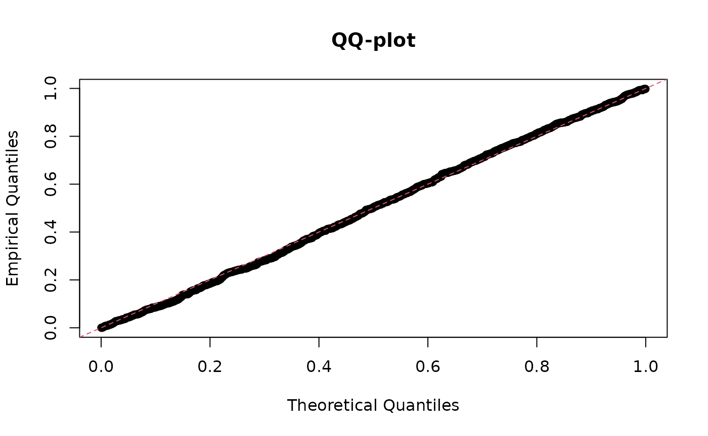

Introduction to the hwep package
introduction.RmdIntroduction
This vignette covers the basic usage of the hwep package. The methods implemented here are described in detail in Gerard (2021). We will cover:
- Functions for calculating segregation probabilities.
- Functions for calculating equilibrium genotype frequencies.
- Functions for testing for equilibrium and random mating.
Let’s load the package so we can begin.
library(hwep)The double reduction parameter.
Throughout this vignette, we will discuss the “double reduction parameter”, which we should briefly clarify. This parameter is a vector of probabilities of length floor(ploidy / 4), where ploidy is the ploidy of the species. Element i of this vector is the probability that an offspring will have exactly i copies of identical-by-double-reduction (IBDR) alleles. If alpha is this parameter vector, than 1 - sum(alpha) is the probability that an offspring has no IBDR alleles.
The double reduction parameter is known to have an upper bound, based on the model for meiosis considered. The largest bound typically assumed in the literature is derived from the “complete equational segregation model”, introduced by Mather (1935) and later generalized in Huang et al. (2019). These bounds can be calculated by the drbounds() function for different ploidies.
drbounds(ploidy = 4)
#> [1] 0.1666667
drbounds(ploidy = 6)
#> [1] 0.3
drbounds(ploidy = 8)
#> [1] 0.38571429 0.02142857
drbounds(ploidy = 10)
#> [1] 0.43650794 0.05952381
drbounds(ploidy = 12)
#> [1] 0.462662338 0.105519481 0.002705628During our analysis procedures, we typically assume that the double reduction parameter is between 0 and these upper bounds.
Segregation probabilities
This package comes with a few functions to calculate the probabilities of gamete and offspring dosages given parental dosages. These generalize classical Mendelian inheritance to include rates of double reduction. We use the specific model derived by Fisher & Mather (1943), and later generalized by Huang et al. (2019).
-
dgamete(): This function will calculate gamete dosage probabilities given the parental genotype. So, if we want to calculate the probability of gametes having dosage 0, 1, and 2 when the parent has a dosage of 3, the double reduction rate is 0.1, and the ploidy is 4, we would run:dgamete(x = 0:2, alpha = 0.1, G = 3, ploidy = 4) #> [1] 0.025 0.450 0.525 -
gsegmat(): Given a ploidy level and a double reduction rate, this function will calculate all possible gamete dosage probabilities for each possible parental genotype. The rows index the parental genotypes and the columns index the gamete genotypes.gsegmat(alpha = 0.1, ploidy = 4) #> 0 1 2 #> 0 1.000 0.00 0.000 #> 1 0.525 0.45 0.025 #> 2 0.200 0.60 0.200 #> 3 0.025 0.45 0.525 #> 4 0.000 0.00 1.000From the above matrix, the probability of a gamete having dosage 1 when the parental dosage is 2 is 0.6.
gsegmat(alpha = 0.1, ploidy = 4)[3, 2] #> [1] 0.6 -
gsegmat_symb(): This function provides a symbolic representation of the gamete segregation probabilities. In the outputarepresents the probability of exactly zero copies of IBDR alleles,brepresents the probability of exactly one copy of IBDR alleles,crepresents the probability of exactly two copies of IBDR alleles, etc…gsegmat_symb(ploidy = 4) #> 0 1 2 #> 0 "a+b" "0" "0" #> 1 "(1/2)a+(3/4)b" "(1/2)a" "(1/4)b" #> 2 "(1/6)a+(1/2)b" "(2/3)a" "(1/6)a+(1/2)b" #> 3 "(1/4)b" "(1/2)a" "(1/2)a+(3/4)b" #> 4 "0" "0" "a+b" -
zsegarray(): Instead of considering gamete dosages, this function will calculate zygote dosage probabilities given both parental genotypes. It will do this for each possible offspring dosage and each possible parental genotype.sega <- zsegarray(alpha = 0.1, ploidy = 4) sega #> , , offspring = 0 #> #> parent2 #> parent1 0 1 2 3 4 #> 0 1.000 5.250000e-01 2.000000e-01 2.500000e-02 4.440892e-17 #> 1 0.525 2.756250e-01 1.050000e-01 1.312500e-02 6.661338e-17 #> 2 0.200 1.050000e-01 4.000000e-02 5.000000e-03 3.330669e-17 #> 3 0.025 1.312500e-02 5.000000e-03 6.250000e-04 2.220446e-17 #> 4 0.000 -2.220446e-17 -1.665335e-17 4.440892e-17 4.440892e-17 #> #> , , offspring = 1 #> #> parent2 #> parent1 0 1 2 3 4 #> 0 6.661338e-17 4.500000e-01 0.600 0.4500 0.000000e+00 #> 1 4.500000e-01 4.725000e-01 0.405 0.2475 1.942890e-17 #> 2 6.000000e-01 4.050000e-01 0.240 0.1050 0.000000e+00 #> 3 4.500000e-01 2.475000e-01 0.105 0.0225 -4.440892e-17 #> 4 -4.440892e-17 -1.110223e-17 0.000 0.0000 0.000000e+00 #> #> , , offspring = 2 #> #> parent2 #> parent1 0 1 2 3 4 #> 0 6.661338e-17 0.02500 0.20 0.52500 1.000 #> 1 2.500000e-02 0.22875 0.38 0.47875 0.525 #> 2 2.000000e-01 0.38000 0.44 0.38000 0.200 #> 3 5.250000e-01 0.47875 0.38 0.22875 0.025 #> 4 1.000000e+00 0.52500 0.20 0.02500 0.000 #> #> , , offspring = 3 #> #> parent2 #> parent1 0 1 2 3 4 #> 0 6.661338e-17 2.220446e-17 -2.220446e-17 0.0000 0.00 #> 1 1.110223e-16 2.250000e-02 1.050000e-01 0.2475 0.45 #> 2 6.661338e-17 1.050000e-01 2.400000e-01 0.4050 0.60 #> 3 8.881784e-17 2.475000e-01 4.050000e-01 0.4725 0.45 #> 4 8.881784e-17 4.500000e-01 6.000000e-01 0.4500 0.00 #> #> , , offspring = 4 #> #> parent2 #> parent1 0 1 2 3 4 #> 0 6.661338e-17 4.440892e-17 0.000 4.440892e-17 0.000 #> 1 0.000000e+00 6.250000e-04 0.005 1.312500e-02 0.025 #> 2 4.440892e-17 5.000000e-03 0.040 1.050000e-01 0.200 #> 3 4.440892e-17 1.312500e-02 0.105 2.756250e-01 0.525 #> 4 4.440892e-17 2.500000e-02 0.200 5.250000e-01 1.000Thus, the probability of an offspring dosage of 3 when parental dosages are 2 and 4, is
sega[4, 3, 5] #> [1] 0.105
Equilibrium genotype frequencies
Equilibrium frequencies can be generated with hwefreq() for arbitrary ploidy levels.
hout <- hwefreq(r = 0.1, alpha = 0.1, ploidy = 6)
round(hout, digits = 5)
#> [1] 0.55062 0.32437 0.10232 0.01998 0.00250 0.00019 0.00001Alternatively, you can control the number of iterations of random mating before stopping. The population begins in a state where r proportion of individuals have genotype ploidy and 1-r proportion has genotype 0. It then updates each generation’s genotype frequencies using freqnext(). E.g., for r=0.1 and alpha=0.1, after the first round of random mating, we have:
freqnext(freq = c(0.9, 0, 0, 0, 0.1), alpha = 0.1)
#> [1] 8.100000e-01 6.106227e-17 1.800000e-01 4.440892e-17 1.000000e-02
hwefreq(r = 0.1, alpha = 0.1, niter = 1, ploidy = 4)
#> [1] 8.100000e-01 6.106227e-17 1.800000e-01 4.440892e-17 1.000000e-02Testing for equilibrium and random mating
The main function for this package is hwefit(), which implements various tests for random mating and equilibrium. This function has parallelization support through the future package. We’ll demonstrate using the future package assuming at least two cores are available.
library(future)
availableCores()
#> system
#> 8
plan(multisession, workers = 2)Let’s simulate some data at equilibrium to demonstrate our methods:
geno_freq <- hwefreq(r = 0.5, alpha = 0.1, ploidy = 6)
nmat <- t(rmultinom(n = 1000, size = 100, prob = geno_freq))
head(nmat)
#> [,1] [,2] [,3] [,4] [,5] [,6] [,7]
#> [1,] 2 11 17 25 33 10 2
#> [2,] 0 10 25 27 24 14 0
#> [3,] 6 6 26 24 22 15 1
#> [4,] 0 15 24 28 23 7 3
#> [5,] 3 11 24 32 20 10 0
#> [6,] 1 11 24 29 20 11 4hwefit() expects a matrix of genotype counts, where the rows index the loci and the columns index the genotype. So nmat[i, j] is the count of the number of individuals that have dosage j-1 at locus i.
You control the type of test via the type argument. Using type = "ustat" will use the \(U\)-statistic approach to test for equilibrium, as implemented in hweustat().
uout <- hwefit(nmat = nmat, type = "ustat")The output is a list-like object that contains the estimates of double reduction (alpha), the \(p\)-values for the test against the null of equilibrium (p_hwe), as well as the test-statistics (chisq_hwe) and degrees of freedom (df_hwe) of this test.
On average, we obtain good estimates of the double reduction rate
mean(uout$alpha1)
#> [1] 0.1029922But the sampling properties of this estimator are highly variable, even for such a large sample size:
hist(uout$alpha1)
This highlights the difficulty in estimating double reduction using just a single biallelic locus.
The p-values are generally uniformly distributed, as they should be since we generated data under the null of equilibrium.
hist(uout$p_hwe, breaks = 10, xlab = "P-values", main = "")
qqplot(x = ppoints(length(uout$p_hwe)),
y = uout$p_hwe,
xlab = "Theoretical Quantiles",
ylab = "Empirical Quantiles",
main = "QQ-plot")
abline(0, 1, lty = 2, col = 2)
Make sure to shut down your workers after you are done:
plan("sequential")The other values of “type” run different procedures:
-
"mle": Runs likelihood procedures to test for equilibrium and estimate double reduction. Only available for ploidies less than or equal to 10. This generally behaves similarly to the \(U\)-statistic approach. This is implemented by thehwelike()function. -
"rm": Runs likelihood procedures to test for random mating. This is implemented by thermlike()function. -
"nodr": Runs likelihood procedures to test for equilibrium assuming no double reduction. This is implemented by thehwenodr()function.
References
Fisher, R. A., & Mather, K. (1943). The inheritance of style length in Lythrum salicaria. Annals of Eugenics, 12(1), 1-23. doi:10.1111/j.1469-1809.1943.tb02307.x
Gerard, D. (2021). Double reduction estimation and equilibrium tests in natural autopolyploid populations. bioRxiv. doi:10.1101/2021.09.24.461731.
Huang, K., Wang, T., Dunn, D. W., Zhang, P., Cao, X., Liu, R., & Li, B. (2019). Genotypic frequencies at equilibrium for polysomic inheritance under double-reduction. G3: Genes | Genomes | Genetics, 9(5), 1693-1706. doi:10.1534/g3.119.400132
Mather, K. (1935). Reductional and equational separation of the chromosomes in bivalents and multivalents. Journal of Genetics, 30(1), 53-78. doi:10.1007/BF02982205